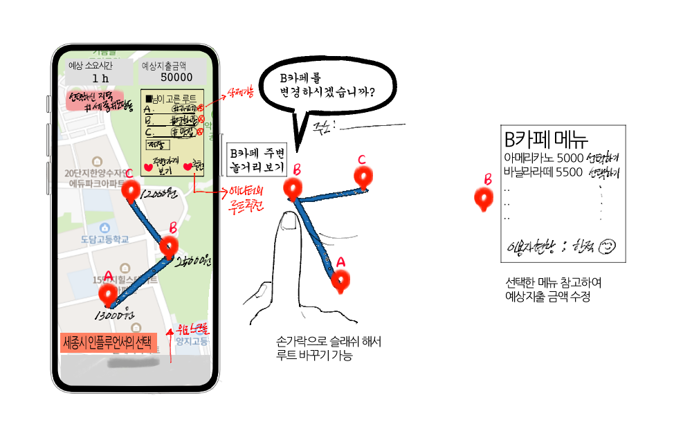

일행 앱은 ‘가벼운 여행/동네마실/데이트 코스 짜기’에 초점을 맞추었습니다. 코스를 짜는 것에 어려움과 스트레스를 사용자들에게 코스 짜기의 진입장벽을 낮춰주는 역할을 메인으로 잡았으며. 사용자들이 쉽게 여행을 갈 수 있게 만들어주고, 해당 서비스로 숨겨진 주변 상권들을 홍보하여 코로나 때문에 어려움을 겪는 동네 소상공인들의 가게를 홍보하는 효과와 지역 축제, 현지인들만의 플레이스 추천 등의 서비스를 제공할 수 있습니다. 타인의 여행 루트를 참고할 수도 있기 때문에 단순히 지엽적이고 단편적인 정보들만 수집한 후 코스를 짜는 형태보다 더 쉽고 빠르게 계획을 세울 수 있으며 유동적으로 계획을 바꿀 수 있습니다. 사람들이 평균적으로 머무는 시간, 이동 거리, 총 소비 비용 등을 계산하여 이용자의 합리적인 선택을 보조해주는 역할을 합니다.
초기디자인 루트를 선택고 예산과 시간까지 정산해주면 좋겠다는 틀로 시작했습니다.


사용자의 취향을 분석하여 여행지 추천과 루트 추천을 분류할 수 있다.


취향, 저장된 루트, 회원정보를 수정할 수 있습니다.


주변 추천과 루트를 관리할 수 있으며 이동 시간과 가격이 윗 상단에 표시됩니다.

장소를 검색하여 루트에 추가가 가능합니다.


대전, 천안, 제주 등 여러 도시들을 목표로 정리하였습니다.

맛집/놀거리/등등을 별점, 이름 순으로 나열하였습니다.

메뉴를 선택하고 해당 가격을 예산에 올립니다.

이용자들의 후기를 볼 수 있습니다. 사용자들의 루트와 소감을 볼 수 있으며 이모티콘과 댓글을 달 수 있습니다.
해당 앱은 국내 여행 또는 일상을 크게 벗어나지 않은 여흥을 즐기고 싶은 소비자들을 타게팅하고 있기 때문에 소비자들이 코스를 설정할 시 식당이나 숙소 상호명을 리스트 상단에 게시하여 광고비를 받거나, 해당 앱과 제휴를 맺은 여행사나 식당들을 소비자들이 예약을 하거나 사용을 하면 일정 수수료를 받는 것으로 영업이익을 취득합니다. 후에 앱 반응도가 괜찮다면 사용자들이 많이 이용한, 만족도가 높은 코스를 하나의 패키지 형태로 소비자들에게 홍보를 하여 사업을 확장을 할 것입니다.